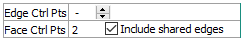
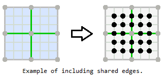
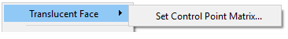
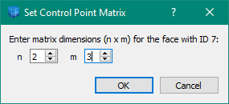

面控制点
与仅使用棱边控制点相比，面控制点可以让您更细致地塑造面的形状。
可以使用选择模式（ ）或控制点模式（）向面添加控制点。在撰写本文时，控制点可以添加到 4 边形面上，但不能添加到三角形面上。
）或控制点模式（）向面添加控制点。在撰写本文时，控制点可以添加到 4 边形面上，但不能添加到三角形面上。
在选择模式下，您可以选中一个或多个面，然后在对象属性控件组中找到“面控制点”行。输入控制点矩阵的尺寸（n x n）数值。允许使用 2 或更大的值（直至最大值），但不允许使用 1。数值 0 将删除所选面上的控制点。在控制点模式下可以看到这些控制点。
标有“包含共享棱边”的复选框被勾选后，将取面控制点矩阵的尺寸并将其应用于有多个所选面的棱边。在此处所示的示例中，选中了 4 个面，由于面控制点矩阵的大小被设为 2 x 2，因此以绿色显示的每条棱边都将获得 2 个控制点。




在控制点模式下，可借助上下文菜单一次为一个面设置面控制点。您可以右键单击半透明面或面控制点，以访问“设置控制点矩阵…”菜单项。该命令将显示一个对话框，您可以在其中为该面输入新的矩阵尺寸。




选择和操纵
单击面控制点即可单独选中它们。使用 Control+单击 可以创建多项选择。框选对控制点无效。至少选中一个控制点时，按 Control+A 将选中同一面上其余所有控制点。选中所有控制点后，按 Delete 键将删除它们。一次只能为一个面选中多个控制点。
操纵柄操作对面控制点的工作方式与其他对象相同，只是不支持缩放。
点到点捕捉
点到点捕捉对面控制点的作用与对棱边控制点相同。按住 Shift 单击要移动的面控制点以将其选中，然后按住 Shift 单击几何数据上的某个位置，该面控制点便会移动到该位置。有关点到点捕捉的更多信息，请参阅此处（here）。
披覆
当您使用对象属性控件组中的披覆控件时，发送到控制台的命令始终指定体点。因此，如果您选中一条棱边并对其进行披覆，该棱边的端点会在命令中被指定；当两个端点都被指定时，该棱边上的控制点也会被披覆。
面也是如此。如果您选中一个面并对其进行披覆，属于该面的所有体点都会在命令中被指定；当这种情况发生时，面控制点也会被披覆。
| 这些内容对您有帮助吗？… | FLAC3D © 2019, Itasca | 原文更新于 2020 年 10 月 8 日 |